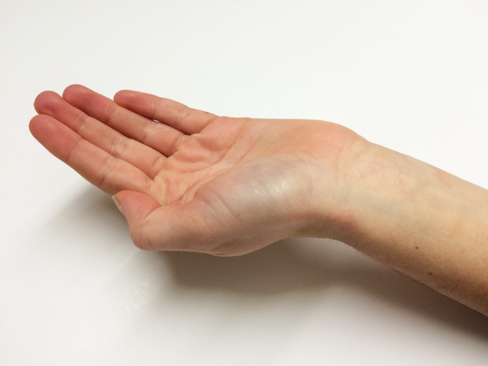
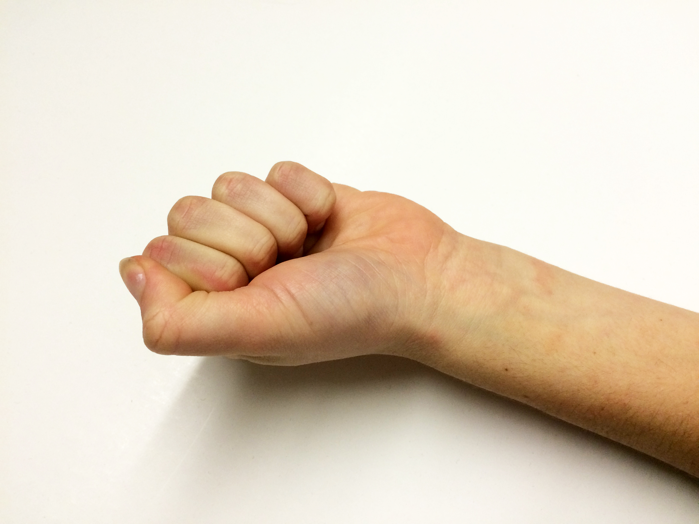
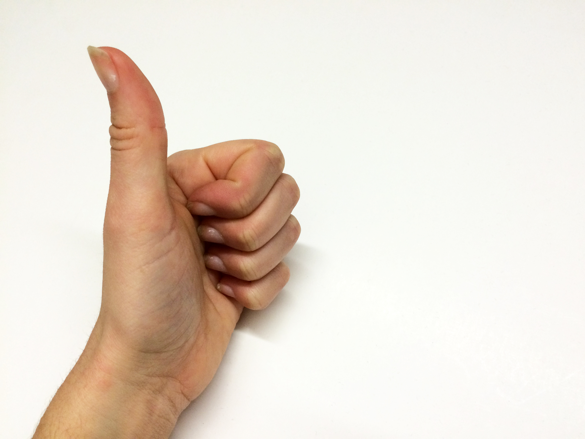

WHAT ARE THE MOST COMMON HAND GESTURES?
AND HOW ARE THEY USED?
|  |  |

|
 |

|

|
These are the most commonly used hand gestures. The hand gestures shown are usually imperative actions, meaning they help instruct people on what the person wants them to do. However this is not always the case. Particulary in design hand gestures are an important part of the user interface/ experience. They must study the exact nature of a swipe of a human hand in order to make the link of the interaction from human to technology Although they all have different meanings, they are often able to be understood by alot of cultures around the world.